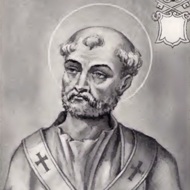

St. Sixtus
Pope St. Sixtus I (in the oldest documents, Xystus is the spelling used for the first three popes of that name), succeeded St. Alexander and was followed by St. Telesphorus. According to the "Liberian Catalogue" of popes, he ruled the Church during the reign of Adrian "a conulatu Nigri et Aproniani usque Vero III et Ambibulo", that is, from 117 to 126. Eusebius, who in his "Chronicon" made use of a catalogue of popes different from the one he used in his "Historia ecclesiastica", states in his "Chronicon" that Sixtus I was pope from 114 to 124, while in his "History" he makes him rule from 114 to 128. All authorities agree that he reigned about ten years. He was a Roman by birth, and his father's name was Pastor. According to the "Liber Pontificalis" (ed. Duchesne, I, 128), he passed the following three ordinances:
(1) that none but sacred ministers are allowed to touch the sacred vessels;
(2) that bishops who have been summoned to the Holy See shall, upon their return, not be received by their diocese except on presenting Apostolic letters;
(3) that after the Preface in the Mass the priest shall recite the Sanctus with the people.
The "Felician Catalogue" of popes and the various martyrologies give him the title of martyr. His feast is celebrated on 6 April. He was buried in the Vatican, beside the tomb of St. Peter. His relics are said to have been transferred to Alatri in 1132, though O Jozzi ("Il corpo di S. Sisto I., papa e martire rivendicato alla basilica Vaticana", Rome, 1900) contends that they are still in the Vatican Basilica. Butler (Lives of the Saints, 6 April) states that Clement X gave some of his relics to Cardinal de Retz, who placed them in the Abbey of St. Michael in Lorraine. The Xystus who is commemorated in the Canon of the Mass is Xystus II, not Xystus I.
Acta SS., April, I, 531-4; Liber Pontificatis, ed. DUCHESNE, I (Paris, 1886), 128; MARINI, Cenni storici popolari sopra S. Sisto I, papa e martire, e suo culto in Aletri (Foligno, 1884); DE PERSIIS, Del pontificato di S. Sisto I, papa e martire, della translazione delle sue reliquie da Roma ecc., memorie (Alatri, 1884); BARMBY in Dict. Christ. Biog., s.v. Sixtus (2) I.
Ott, M. (1912). Pope St. Sixtus I. In The Catholic Encyclopedia. New York: Robert Appleton Company. Retrieved April 26, 2010 from New Advent: http://www.newadvent.org/cathen/14031b.htm